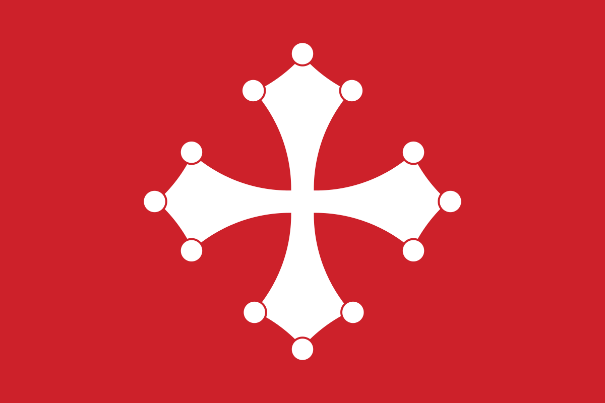

Istoria Pisei
Republica Pisa a fost un stat independent de facto, situat în regiunea Toscana și axat în jurul orașului Pisa, care a atins apogeul dezvoltării sale la finele secolului al X-lea și pe parcursul secolului al XI-lea. Statul a evoluat pentru a deveni o putere economică, un centru comercial ai cărui negustori dominau la un moment dat Marea Mediterană, înainte de a fi depășiti și înlocuiți de către rivalii din Republica Genova.
În 1060 Pisa a fost angajată în prima sa bătălie contra Genovei, care s-a încheiat cu o victorie, fapt care a permis consolidarea poziției pisanilor în Mediterana. Papa Grigore al VII-lea a recunoscut în 1077 noile "legi și obiceiuri ale mării" instituite de către pisani, iar împăratul Henric al IV-lea le-a acordat dreptul de a-și numi propriii lor consuli, la sfatul unui Consiliu al bătrânilor.
În 1092 papa Urban al II-lea a acordat Pisei supremația asupra Corsicii și Sardiniei și în același timp a ridicat orașul la rangul de arhiepiscopie.
În anul 1182 a avut loc masacrul asupra latinilor din Constantinopol, căruia i-a căzut victimă întreaga colonie Pisană din Constantinopol, fapt care a dus la resentimente antibizantine.
Vreme de câțiva ani din acest secol, Pisa a constituit cel mai proeminent aliat militar al Imperiului Bizantin, depășind Veneția însăși.
Puterea Pisei ca putere internațională a fost pentru totdeauna distrusă în urma categoricei înfrângeri din Bătălia de la Meloria purtată cu Genova în anul 1284, în care cea mai mare parte din galerele pisane au fost distruse și cei mai mulți marinari au fost luați prizonieri de către gneovezi. În anul 1290 un atac hotărât al flotei genoveze asupra Porto Pisano a cauzat distrugerea Pisei.
Ca parte a stăpânirilor familiei Visconti din anul 1399, Pisa a fost apoi vândută către Florența în 1402; după o sângeroasă, dar inutilă rezistență, municipalitatea din Pisa a fost până la urmă supusă în anul 1406.
